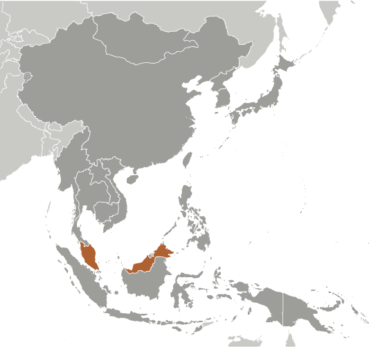
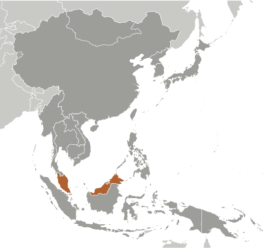

-
Introduction :: Malaysia
-
Background:During the late 18th and 19th centuries, Great Britain established colonies and protectorates in the area of current Malaysia; these were occupied by Japan from 1942 to 1945. In 1948, the British-ruled territories on the Malay Peninsula except Singapore formed the Federation of Malaya, which became independent in 1957. Malaysia was formed in 1963 when the former British colonies of Singapore, as well as Sabah and Sarawak on the northern coast of Borneo, joined the Federation. The first several years of the country's independence were marred by a communist insurgency, Indonesian confrontation with Malaysia, Philippine claims to Sabah, and Singapore's withdrawal in 1965. During the 22-year term of Prime Minister MAHATHIR bin Mohamad (1981-2003), Malaysia was successful in diversifying its economy from dependence on exports of raw materials to the development of manufacturing, services, and tourism. Prime Minister MAHATHIR and a newly-formed coalition of opposition parties defeated Prime Minister Mohamed NAJIB bin Abdul Razak in May 2018, ending over 60 years of uninterrupted rule by NAJIB’s party.
-
Geography :: Malaysia
-
Location:Southeastern Asia, peninsula bordering Thailand and northern one-third of the island of Borneo, bordering Indonesia, Brunei, and the South China Sea, south of VietnamGeographic coordinates:2 30 N, 112 30 EMap references:Southeast AsiaArea:total: 329,847 sq kmland: 328,657 sq kmwater: 1,190 sq kmcountry comparison to the world: 68Area - comparative:slightly larger than New MexicoLand boundaries:total: 2,742 kmborder countries (3): Brunei 266 km, Indonesia 1881 km, Thailand 595 kmCoastline:4,675 km (Peninsular Malaysia 2,068 km, East Malaysia 2,607 km)Maritime claims:territorial sea: 12 nmexclusive economic zone: 200 nmcontinental shelf: 200-m depth or to the depth of exploitation; specified boundary in the South China SeaClimate:tropical; annual southwest (April to October) and northeast (October to February) monsoonsTerrain:coastal plains rising to hills and mountainsElevation:mean elevation: 419 melevation extremes: 0 m lowest point: Indian Ocean4095 highest point: Gunung KinabaluNatural resources:tin, petroleum, timber, copper, iron ore, natural gas, bauxiteLand use:agricultural land: 23.2% (2011 est.)arable land: 2.9% (2011 est.) / permanent crops: 19.4% (2011 est.) / permanent pasture: 0.9% (2011 est.)forest: 62% (2011 est.)other: 14.8% (2011 est.)Irrigated land:3,800 sq km (2012)Population distribution:a highly uneven distribution with over 80% of the population residing on the Malay PeninsulaNatural hazards:flooding; landslides; forest firesEnvironment - current issues:air pollution from industrial and vehicular emissions; water pollution from raw sewage; deforestation; smoke/haze from Indonesian forest fires; endangered species; coastal reclamation damaging mangroves and turtle nesting sitesEnvironment - international agreements:party to: Biodiversity, Climate Change, Climate Change-Kyoto Protocol, Desertification, Endangered Species, Hazardous Wastes, Law of the Sea, Marine Life Conservation, Ozone Layer Protection, Ship Pollution, Tropical Timber 83, Tropical Timber 94, Wetlandssigned, but not ratified: none of the selected agreementsGeography - note:strategic location along Strait of Malacca and southern South China Sea
-
People and Society :: Malaysia
-
Population:31,809,660 (July 2018 est.)country comparison to the world: 42Nationality:noun: Malaysian(s)adjective: MalaysianEthnic groups:Bumiputera 61.7% (Malays and indigenous peoples, including Orang Asli, Dayak, Anak Negeri), Chinese 20.8%, Indian 6.2%, other 0.9%, non-citizens 10.4% (2017 est.)Languages:Bahasa Malaysia (official), English, Chinese (Cantonese, Mandarin, Hokkien, Hakka, Hainan, Foochow), Tamil, Telugu, Malayalam, Panjabi, Thai
note: Malaysia has 134 living languages - 112 indigenous languages and 22 non-indigenous languages; in East Malaysia there are several indigenous languages; most widely spoken are Iban and Kadazan
Religions:Muslim (official) 61.3%, Buddhist 19.8%, Christian 9.2%, Hindu 6.3%, Confucianism, Taoism, other traditional Chinese religions 1.3%, other 0.4%, none 0.8%, unspecified 1% (2010 est.)Age structure:0-14 years: 27.48% (male 4,498,796 /female 4,243,418)15-24 years: 16.74% (male 2,704,318 /female 2,621,444)25-54 years: 40.97% (male 6,587,529 /female 6,444,430)55-64 years: 8.46% (male 1,364,858 /female 1,325,595)65 years and over: 6.35% (male 957,841 /female 1,061,431) (2018 est.)population pyramid: The World Factbook Field Image ModalEast Asia/Southeast Asia :: Malaysia Print
The World Factbook Field Image ModalEast Asia/Southeast Asia :: Malaysia Print Image DescriptionThis is the population pyramid for Malaysia. A population pyramid illustrates the age and sex structure of a country's population and may provide insights about political and social stability, as well as economic development. The population is distributed along the horizontal axis, with males shown on the left and females on the right. The male and female populations are broken down into 5-year age groups represented as horizontal bars along the vertical axis, with the youngest age groups at the bottom and the oldest at the top. The shape of the population pyramid gradually evolves over time based on fertility, mortality, and international migration trends.
Image DescriptionThis is the population pyramid for Malaysia. A population pyramid illustrates the age and sex structure of a country's population and may provide insights about political and social stability, as well as economic development. The population is distributed along the horizontal axis, with males shown on the left and females on the right. The male and female populations are broken down into 5-year age groups represented as horizontal bars along the vertical axis, with the youngest age groups at the bottom and the oldest at the top. The shape of the population pyramid gradually evolves over time based on fertility, mortality, and international migration trends.
For additional information, please see the entry for Population pyramid on the Definitions and Notes page under the References tab.Dependency ratios:total dependency ratio: 44.6 (2015 est.)youth dependency ratio: 36.1 (2015 est.)elderly dependency ratio: 8.5 (2015 est.)potential support ratio: 11.8 (2015 est.)Median age:total: 28.7 yearsmale: 28.4 yearsfemale: 29 years (2018 est.)country comparison to the world: 130Population growth rate:1.34% (2018 est.)country comparison to the world: 82Birth rate:18.8 births/1,000 population (2018 est.)country comparison to the world: 87Death rate:5.2 deaths/1,000 population (2018 est.)country comparison to the world: 190Net migration rate:-0.3 migrant(s)/1,000 population (2017 est.)country comparison to the world: 116Population distribution:a highly uneven distribution with over 80% of the population residing on the Malay PeninsulaUrbanization:urban population: 76% of total population (2018)rate of urbanization: 2.13% annual rate of change (2015-20 est.)Major urban areas - population:7.564 million KUALA LUMPUR (capital), 983,000 Johor Bahru, 786,000 Ipoh (2018)Sex ratio:at birth: 1.07 male(s)/female (2017 est.)0-14 years: 1.06 male(s)/female (2017 est.)15-24 years: 1.03 male(s)/female (2017 est.)25-54 years: 1.02 male(s)/female (2017 est.)55-64 years: 1.03 male(s)/female (2017 est.)65 years and over: 0.9 male(s)/female (2017 est.)total population: 1.03 male(s)/female (2017 est.)Maternal mortality rate:40 deaths/100,000 live births (2015 est.)country comparison to the world: 105Infant mortality rate:total: 12.1 deaths/1,000 live births (2018 est.)male: 14 deaths/1,000 live births (2018 est.)female: 10.1 deaths/1,000 live births (2018 est.)country comparison to the world: 112Life expectancy at birth:total population: 75.4 years (2018 est.)male: 72.6 years (2018 est.)female: 78.4 years (2018 est.)country comparison to the world: 107Total fertility rate:2.48 children born/woman (2018 est.)country comparison to the world: 78Contraceptive prevalence rate:52.2% (2014)Health expenditures:4.2% of GDP (2014)country comparison to the world: 163Physicians density:1.53 physicians/1,000 population (2015)Hospital bed density:1.9 beds/1,000 population (2015)Drinking water source:improved: urban: 100% of populationrural: 93% of populationtotal: 98.2% of populationunimproved: urban: 0% of populationrural: 7% of populationtotal: 1.8% of population (2015 est.)Sanitation facility access:improved: urban: 96.1% of population (2015 est.)rural: 95.9% of population (2015 est.)total: 96% of population (2015 est.)unimproved: urban: 3.9% of population (2015 est.)rural: 4.1% of population (2015 est.)total: 4% of population (2015 est.)HIV/AIDS - adult prevalence rate:0.4% (2017 est.)country comparison to the world: 75HIV/AIDS - people living with HIV/AIDS:87,000 (2017 est.)country comparison to the world: 47HIV/AIDS - deaths:4,400 (2017 est.)country comparison to the world: 33Major infectious diseases:degree of risk: intermediate (2016)food or waterborne diseases: bacterial diarrhea (2016)vectorborne diseases: dengue fever (2016)water contact diseases: leptospirosis (2016)Obesity - adult prevalence rate:15.6% (2016)country comparison to the world: 125Children under the age of 5 years underweight:13.7% (2016)country comparison to the world: 47Education expenditures:4.8% of GDP (2016)country comparison to the world: 85Literacy:definition: age 15 and over can read and write (2015 est.)total population: 94.6% (2015 est.)male: 96.2% (2015 est.)female: 93.2% (2015 est.)School life expectancy (primary to tertiary education):total: 13 years (2015)male: 12 years (2015)female: 13 years (2015)Unemployment, youth ages 15-24:total: 10.5% (2016 est.)male: 9.8% (2016 est.)female: 11.4% (2016 est.)country comparison to the world: 123 -
Government :: Malaysia
-
Country name:conventional long form: noneconventional short form: Malaysialocal long form: nonelocal short form: Malaysiaformer: Federation of Malayaetymology: the name means "Land of the Malays"Government type:federal parliamentary constitutional monarchy
note: all Peninsular Malaysian states have hereditary rulers (commonly referred to as sultans) except Melaka (Malacca) and Pulau Pinang (Penang); those two states along with Sabah and Sarawak in East Malaysia have governors appointed by government; powers of state governments are limited by federal constitution; under terms of federation, Sabah and Sarawak retain certain constitutional prerogatives (e.g., right to maintain their own immigration controls)
Capital:name: Kuala Lumpur; note - nearby Putrajaya is referred to as a federal government administrative center but not the capital; Parliament meets in Kuala Lumpurgeographic coordinates: 3 10 N, 101 42 Etime difference: UTC+8 (13 hours ahead of Washington, DC, during Standard Time)Administrative divisions:13 states (negeri-negeri, singular - negeri); Johor, Kedah, Kelantan, Melaka, Negeri Sembilan, Pahang, Perak, Perlis, Pulau Pinang, Sabah, Sarawak, Selangor, Terengganu; and 1 federal territory (Wilayah Persekutuan) with 3 components, Kuala Lumpur, Labuan, and PutrajayaIndependence:31 August 1957 (from the UK)National holiday:Independence Day (or Merdeka Day), 31 August (1957) (independence of Malaya); Malaysia Day, 16 September (1963) (formation of Malaysia)Constitution:history: previous 1948; latest drafted 21 February 1957, effective 27 August 1957 (2017)amendments: proposed as a "bill" by Parliament; passage requires at least two-thirds majority vote by the Parliament membership in the bill’s second and third readings; a number of constitutional sections are excluded from amendment or repeal; amended many times, last in 2010 (2017)Legal system:mixed legal system of English common law, Islamic law, and customary law; judicial review of legislative acts in the Federal Court at request of supreme head of the federationInternational law organization participation:has not submitted an ICJ jurisdiction declaration; non-party state to the ICCtCitizenship:citizenship by birth: nocitizenship by descent only: at least one parent must be a citizen of Malaysiadual citizenship recognized: noresidency requirement for naturalization: 10 out 12 years preceding applicationSuffrage:21 years of age; universalJudicial branch:highest courts: Federal Court (consists of the chief justice, president of the Court of Appeal, chief justice of the High Court of Malaya, chief judge of the High Court of Sabah and Sarawak, 8 judges, and 1 "additional" judge); note - Malaysia has a dual judicial hierarchy of civil and religious (sharia) courtsjudge selection and term of office: Federal Court justices appointed by the monarch on advice of the prime minister; judges serve until mandatory retirement at age 66 with the possibility of 6-month extensionssubordinate courts: Court of Appeal; High Court; Sessions Court; Magistrates' CourtExecutive branch:chief of state: King MUHAMMAD V (formerly known as Tuanku Muhammad Faris Petra) (selected on 14 October 2016; installed on 13 December 2016); note - the position of the king is primarily ceremonial, but he is the final arbiter on the appointment of the prime ministerhead of government: Prime Minister MAHATHIR Mohamad (since 10 May 2018); Deputy Prime Minister WAN AZIZAH Wan Ismail (since 10 May 2018)cabinet: Cabinet appointed by the prime minister from among members of Parliament with the consent of the kingelections/appointments: king elected by and from the hereditary rulers of 9 states for a 5-year term; election is on a rotational basis among rulers of the 9 states; election last held on 14 October 2016 (next to be held in 2021); prime minister designated from among members of the House of Representatives; following legislative elections, the leader who commands support of the majority of members in the House becomes prime ministerLegislative branch:description: bicameral Parliament or Parlimen consists of:
Senate or Dewan Negara (70 seats; 44 members appointed by the king and 26 indirectly elected by 13 state legislatures; members serve 3-year terms)
House of Representatives or Dewan Rakyat (222 seats; members directly elected in single-seat constituencies by simple majority vote to serve 5-year terms)elections:
Senate - appointed
House of Representatives - last held on 9 May 2018 (next to be held in 2023)election results:
Senate - appointed; composition - men 54, women 14, percent of women 20.6%
House of Representatives - percent of vote by party/coalition - PH 45.6%, BN 33.8%, PAS 16.9%, WARISAN 2.3%, other 1.4%; seats by party/coalition - PH 113, BN 79, PAS 18, WARISAN 8, STAR 1, independent 3; composition - men 199, women 23, percent of women 10.4%; note - total Parliament percent of women 12.8%Political parties and leaders:National Front (Barisan Nasional) or BN:
Malaysian Chinese Association (Persatuan China Malaysia) or MCA [LIOW Tiong Lai]
Malaysian Indian Congress (Kongres India Malaysia) or MIC [S. SUBRAMANIAM]
United Malays National Organization or UMNO [Ahmad ZAHID Hamidi]
Coalition of Hope (Pakatan Harapan) or PH (formerly the People's Alliance):
Democratic Action Party (Parti Tindakan Demokratik) or DAP [TAN Kok Wai]
Malaysian United Indigenous Party (Parti Pribumi Bersatu Malaysia) or PPBM [MAHATHIR Mohamad]
National Trust Party (Parti Amanah Negara) or AMANAH [Mohamad SABU]
People's Justice Party (Parti Keadilan Rakyat) or PKR [ANWAR Ibrahim]
Other:
Homeland Solidarity Party or STAR [Jeffrey KATINGAN]
Pan-Malaysian Islamic Party (Parti Islam se Malaysia) or PAS [Abdul HADI Awang]
Progressive Democratic Party or PDP [TIONG King Sing]
Sabah Heritage Party (Parti Warisan Sabah) or WARISAN [Shafie APDAL]
Sarawak Parties Alliance (Gabungan Parti Sarawak) or GPS [ABANG JOHARI Openg] (includes PBB, SUPP, PRS, PDP)
Sarawak People's Party (Parti Rakyat Sarawak) or PRS [James MASING]
Sarawak United People's Party (Parti Bersatu Rakyat Sarawak) or SUPP [Dr. SIM Kui Hian]
United Pasokmomogun Kadazandusun Murut Organization (Pertubuhan Pasko Momogun Kadazan Dusun Bersatu) or UPKO [Wilfred Madius TANGAU]
United Sabah Party (Parti Bersatu Sabah) or PBS [Joseph PAIRIN Kitingan]
United Sabah People's (Party Parti Bersatu Rakyat Sabah) or PBRS [Joseph KURUP]
United Traditional Bumiputera Party (Parti Pesaka Bumiputera Bersata) or PBBInternational organization participation:ADB, APEC, ARF, ASEAN, BIS, C, CICA (observer), CP, D-8, EAS, FAO, G-15, G-77, IAEA, IBRD, ICAO, ICC (national committees), ICRM, IDA, IDB, IFAD, IFC, IFRCS, IHO, ILO, IMF, IMO, IMSO, Interpol, IOC, IPU, ISO, ITSO, ITU, ITUC (NGOs), MIGA, MINURSO, MONUSCO, NAM, OIC, OPCW, PCA, PIF (partner), UN, UNAMID, UNCTAD, UNESCO, UNIDO, UNIFIL, UNISFA, UNMIL, UNWTO, UPU, WCO, WFTU (NGOs), WHO, WIPO, WMO, WTODiplomatic representation in the US:chief of mission: Ambassador (vacant); Charge d'Affaires MURNI Abdul Hamid (since April 2018)chancery: 3516 International Court NW, Washington, DC 20008telephone: [1] (202) 572-9700FAX: [1] (202) 572-9882consulate(s) general: Los Angeles, New YorkDiplomatic representation from the US:chief of mission: Ambassador Kamala Shirin LAKHDHIR (since 21 February 2017)embassy: 376 Jalan Tun Razak, 50400 Kuala Lumpurmailing address: US Embassy Kuala Lumpur, APO AP 96535-8152telephone: [60] (3) 2168-5000FAX: [60] (3) 2142-2207Flag description:14 equal horizontal stripes of red (top) alternating with white (bottom); there is a dark blue rectangle in the upper hoist-side corner bearing a yellow crescent and a yellow 14-pointed star; the flag is often referred to as Jalur Gemilang (Stripes of Glory); the 14 stripes stand for the equal status in the federation of the 13 member states and the federal government; the 14 points on the star represent the unity between these entities; the crescent is a traditional symbol of Islam; blue symbolizes the unity of the Malay people and yellow is the royal color of Malay rulersnote: the design is based on the flag of the US
National symbol(s):tiger, hibiscus; national colors: gold, blackNational anthem:name: "Negaraku" (My Country)lyrics/music: collective, led by Tunku ABDUL RAHMAN/Pierre Jean DE BERANGERnote: adopted 1957; full version only performed in the presence of the king; the tune, which was adopted from a popular French melody titled "La Rosalie," was originally the anthem of Perak, one of Malaysia's 13 states
-
Economy :: Malaysia
-
Economy - overview:
Malaysia, an upper middle-income country, has transformed itself since the 1970s from a producer of raw materials into a multi-sector economy. Under current Prime Minister NAJIB, Malaysia is attempting to achieve high-income status by 2020 and to move further up the value-added production chain by attracting investments in high technology, knowledge-based industries and services. NAJIB's Economic Transformation Program is a series of projects and policy measures intended to accelerate the country's economic growth. The government has also taken steps to liberalize some services sub-sectors. Malaysia is vulnerable to a fall in world commodity prices or a general slowdown in global economic activity.
The NAJIB administration is continuing efforts to boost domestic demand and reduce the economy's dependence on exports. Domestic demand continues to anchor economic growth, supported mainly by private consumption, which accounts for 53% of GDP. Nevertheless, exports - particularly of electronics, oil and gas, and palm oil - remain a significant driver of the economy. In 2015, gross exports of goods and services were equivalent to 73% of GDP. The oil and gas sector supplied about 22% of government revenue in 2015, down significantly from prior years amid a decline in commodity prices and diversification of government revenues. Malaysia has embarked on a fiscal reform program aimed at achieving a balanced budget by 2020, including rationalization of subsidies and the 2015 introduction of a 6% value added tax. Sustained low commodity prices throughout the period not only strained government finances, but also shrunk Malaysia’s current account surplus and weighed heavily on the Malaysian ringgit, which was among the region’s worst performing currencies during 2013-17. The ringgit hit new lows following the US presidential election amid a broader selloff of emerging market assets.
Bank Negara Malaysia (the central bank) maintains adequate foreign exchange reserves; a well-developed regulatory regime has limited Malaysia's exposure to riskier financial instruments, although it remains vulnerable to volatile global capital flows. In order to increase Malaysia’s competitiveness, Prime Minister NAJIB raised possible revisions to the special economic and social preferences accorded to ethnic Malays under the New Economic Policy of 1970, but retreated in 2013 after he encountered significant opposition from Malay nationalists and other vested interests. In September 2013 NAJIB launched the new Bumiputra Economic Empowerment Program, policies that favor and advance the economic condition of ethnic Malays.
Malaysia signed the 12-nation Trans-Pacific Partnership (TPP) free trade agreement in February 2016, although the future of the TPP remains unclear following the US withdrawal from the agreement. Along with nine other ASEAN members, Malaysia established the ASEAN Economic Community in 2015, which aims to advance regional economic integration.
GDP (purchasing power parity):$933.3 billion (2017 est.)$881.3 billion (2016 est.)$845.6 billion (2015 est.)note: data are in 2017 dollars
country comparison to the world: 26GDP (official exchange rate):$312.4 billion (2017 est.) (2017 est.)GDP - real growth rate:5.9% (2017 est.)4.2% (2016 est.)5.1% (2015 est.)country comparison to the world: 37GDP - per capita (PPP):$29,100 (2017 est.)$27,900 (2016 est.)$27,100 (2015 est.)note: data are in 2017 dollars
country comparison to the world: 71Gross national saving:28.5% of GDP (2017 est.)28.3% of GDP (2016 est.)28.2% of GDP (2015 est.)country comparison to the world: 38GDP - composition, by end use:household consumption: 55.3% (2017 est.)government consumption: 12.2% (2017 est.)investment in fixed capital: 25.3% (2017 est.)investment in inventories: 0.3% (2017 est.)exports of goods and services: 71.4% (2017 est.)imports of goods and services: -64.4% (2017 est.)GDP - composition, by sector of origin:agriculture: 8.8% (2017 est.)industry: 37.6% (2017 est.)services: 53.6% (2017 est.)Agriculture - products:Peninsular Malaysia - palm oil, rubber, cocoa, rice;Sabah - palm oil, subsistence crops; rubber, timber;Sarawak - palm oil, rubber, timber; pepperIndustries:Peninsular Malaysia - rubber and oil palm processing and manufacturing, petroleum and natural gas, light manufacturing, pharmaceuticals, medical technology, electronics and semiconductors, timber processing;Sabah - logging, petroleum and natural gas production;Sarawak - agriculture processing, petroleum and natural gas production, loggingIndustrial production growth rate:5% (2017 est.)country comparison to the world: 55Labor force:14.94 million (2017 est.)country comparison to the world: 39Labor force - by occupation:agriculture: 11%industry: 36%services: 53% (2012 est.)Unemployment rate:3.4% (2017 est.)3.5% (2016 est.)country comparison to the world: 41Population below poverty line:3.8% (2009 est.)Distribution of family income - Gini index:46.2 (2009)49.2 (1997)country comparison to the world: 32Budget:revenues: 51.25 billion (2017 est.)expenditures: 60.63 billion (2017 est.)Taxes and other revenues:16.4% (of GDP) (2017 est.)country comparison to the world: 180Budget surplus (+) or deficit (-):-3% (of GDP) (2017 est.)country comparison to the world: 133Public debt:54.1% of GDP (2017 est.)56.2% of GDP (2016 est.)note: this figure is based on the amount of federal government debt, RM501.6 billion ($167.2 billion) in 2012; this includes Malaysian Treasury bills and other government securities, as well as loans raised externally and bonds and notes issued overseas; this figure excludes debt issued by non-financial public enterprises and guaranteed by the federal government, which was an additional $47.7 billion in 2012
country comparison to the world: 86Fiscal year:calendar yearInflation rate (consumer prices):3.8% (2017 est.)2.1% (2016 est.)note: approximately 30% of goods are price-controlled
country comparison to the world: 151Central bank discount rate:3% (31 December 2011)2.83% (31 December 2010)country comparison to the world: 111Commercial bank prime lending rate:4.61% (31 December 2017 est.)4.52% (31 December 2016 est.)country comparison to the world: 155Stock of narrow money:$107.5 billion (31 December 2017 est.)$84.9 billion (31 December 2016 est.)country comparison to the world: 37Stock of broad money:$107.5 billion (31 December 2017 est.)$84.9 billion (31 December 2016 est.)country comparison to the world: 37Stock of domestic credit:$482.7 billion (31 December 2017 est.)$398.3 billion (31 December 2016 est.)country comparison to the world: 26Current account balance:$9.296 billion (2017 est.)$7.236 billion (2016 est.)country comparison to the world: 24Exports:$187.9 billion (2017 est.)$165.3 billion (2016 est.)country comparison to the world: 28Exports - partners:Singapore 15.1%, China 12.6%, US 9.4%, Japan 8.2%, Thailand 5.7%, Hong Kong 4.5% (2017)Exports - commodities:semiconductors and electronic equipment, palm oil, petroleum and liquefied natural gas, wood and wood products, palm oil, rubber, textiles, chemicals, solar panelsImports:$160.7 billion (2017 est.)$141 billion (2016 est.)country comparison to the world: 27Imports - commodities:electronics, machinery, petroleum products, plastics, vehicles, iron and steel products, chemicalsImports - partners:China 19.9%, Singapore 10.8%, US 8.4%, Japan 7.6%, Thailand 5.8%, South Korea 4.5%, Indonesia 4.4% (2017)Reserves of foreign exchange and gold:$102.4 billion (31 December 2017 est.)$94.5 billion (31 December 2016 est.)country comparison to the world: 25Debt - external:$217.2 billion (31 December 2017 est.)$195.3 billion (31 December 2016 est.)country comparison to the world: 33Stock of direct foreign investment - at home:$139.5 billion (31 December 2017 est.)$121.6 billion (31 December 2016 est.)country comparison to the world: 39Stock of direct foreign investment - abroad:$128.5 billion (31 December 2017 est.)$126.9 billion (31 December 2016 est.)country comparison to the world: 31Exchange rates:ringgits (MYR) per US dollar -4.343 (2017 est.)4.15 (2016 est.)4.15 (2015 est.)3.91 (2014 est.)3.27 (2013 est.) -
Energy :: Malaysia
-
Electricity access:population without electricity: 100,000 (2013)electrification - total population: 99.5% (2013)electrification - urban areas: 99.8% (2013)electrification - rural areas: 98.7% (2013)Electricity - production:148.3 billion kWh (2016 est.)country comparison to the world: 28Electricity - consumption:136.9 billion kWh (2016 est.)country comparison to the world: 26Electricity - exports:3 million kWh (2015 est.)country comparison to the world: 93Electricity - imports:33 million kWh (2016 est.)country comparison to the world: 109Electricity - installed generating capacity:33 million kW (2016 est.)country comparison to the world: 31Electricity - from fossil fuels:78% of total installed capacity (2016 est.)country comparison to the world: 90Electricity - from nuclear fuels:0% of total installed capacity (2017 est.)country comparison to the world: 136Electricity - from hydroelectric plants:18% of total installed capacity (2017 est.)country comparison to the world: 95Electricity - from other renewable sources:4% of total installed capacity (2017 est.)country comparison to the world: 113Crude oil - production:647,900 bbl/day (2017 est.)country comparison to the world: 26Crude oil - exports:326,200 bbl/day (2015 est.)country comparison to the world: 24Crude oil - imports:166,000 bbl/day (2015 est.)country comparison to the world: 35Crude oil - proved reserves:3.6 billion bbl (1 January 2018 est.)country comparison to the world: 27Refined petroleum products - production:528,300 bbl/day (2015 est.)country comparison to the world: 32Refined petroleum products - consumption:704,000 bbl/day (2016 est.)country comparison to the world: 28Refined petroleum products - exports:208,400 bbl/day (2015 est.)country comparison to the world: 31Refined petroleum products - imports:304,600 bbl/day (2015 est.)country comparison to the world: 24Natural gas - production:69.49 billion cu m (2017 est.)country comparison to the world: 13Natural gas - consumption:30.44 billion cu m (2017 est.)country comparison to the world: 31Natural gas - exports:38.23 billion cu m (2017 est.)country comparison to the world: 9Natural gas - imports:2.803 billion cu m (2017 est.)country comparison to the world: 45Natural gas - proved reserves:1.183 trillion cu m (1 January 2018 est.)country comparison to the world: 23Carbon dioxide emissions from consumption of energy:226.8 million Mt (2017 est.)country comparison to the world: 31
-
Communications :: Malaysia
-
Telephones - fixed lines:total subscriptions: 6,578,200 (2017 est.)subscriptions per 100 inhabitants: 21 (2017 est.)country comparison to the world: 25Telephones - mobile cellular:total subscriptions: 42,338,500 (2017 est.)subscriptions per 100 inhabitants: 135 (2017 est.)country comparison to the world: 34Telephone system:general assessment: modern system featuring good intercity services mainly by microwave radio relay and an adequate intercity microwave radio relay network between Sabah and Sarawak via Brunei; international service excellent; one of the most advanced telecom networks; roll-out of a national broadband network (2017)domestic: fixed-line 21 per 100 and mobile-cellular teledensity exceeds 135 per 100 persons; domestic satellite system with 2 earth stations (2017)international: country code - 60; landing point for several major international submarine cable networks that provide connectivity to Asia, Middle East, and Europe; satellite earth stations - 2 Intelsat (1 Indian Ocean, 1 Pacific Ocean) (2017)Broadcast media:state-owned TV broadcaster operates 2 TV networks with relays throughout the country, and the leading private commercial media group operates 4 TV stations with numerous relays throughout the country; satellite TV subscription service is available; state-owned radio broadcaster operates multiple national networks, as well as regional and local stations; many private commercial radio broadcasters and some subscription satellite radio services are available; about 55 radio stations overall (2012)Internet country code:.myInternet users:total: 24,384,952 (July 2016 est.)percent of population: 78.8% (July 2016 est.)country comparison to the world: 29Broadband - fixed subscriptions:total: 2,687,800 (2017 est.)subscriptions per 100 inhabitants: 9 (2017 est.)country comparison to the world: 42
-
Transportation :: Malaysia
-
National air transport system:number of registered air carriers: 12 (2015)inventory of registered aircraft operated by air carriers: 263 (2015)annual passenger traffic on registered air carriers: 50,347,149 (2015)annual freight traffic on registered air carriers: 2,005,979,379 mt-km (2015)Civil aircraft registration country code prefix:9M (2016)Airports:114 (2013)country comparison to the world: 51Airports - with paved runways:total: 39 (2017)over 3,047 m: 8 (2017)2,438 to 3,047 m: 8 (2017)1,524 to 2,437 m: 7 (2017)914 to 1,523 m: 8 (2017)under 914 m: 8 (2017)Airports - with unpaved runways:total: 75 (2013)914 to 1,523 m: 6 (2013)under 914 m: 69 (2013)Heliports:4 (2013)Pipelines:354 km condensate, 6439 km gas, 155 km liquid petroleum gas, 1937 km oil, 43 km oil/gas/water, 114 km refined products, 26 km water (2013)Railways:total: 1,851 km (2014)standard gauge: 59 km 1.435-m gauge (59 km electrified) (2014)narrow gauge: 1,792 km 1.000-m gauge (339 km electrified) (2014)country comparison to the world: 77Roadways:total: 144,403 km (excludes local roads) (2010)paved: 116,169 km (includes 1,821 km of expressways) (2010)unpaved: 28,234 km (2010)country comparison to the world: 35Waterways:7,200 km (Peninsular Malaysia 3,200 km; Sabah 1,500 km; Sarawak 2,500 km) (2011)country comparison to the world: 19Merchant marine:total: 1,690 (2017)by type: bulk carrier 12, container ship 26, general cargo 188, oil tanker 129, other 1335 (2017)country comparison to the world: 14Ports and terminals:major seaport(s): Bintulu, Johor Bahru, George Town (Penang), Port Kelang (Port Klang), Tanjung Pelepascontainer port(s) (TEUs): George Town (Penang) (1,437,120), Port Kelang (Port Klang) (13,169,577), Tanjung Pelepas (8,280,661) (2016)LNG terminal(s) (export): Bintulu (Sarawak)LNG terminal(s) (import): Sungei Udang
-
Military and Security :: Malaysia
-
Military expenditures:1.11% of GDP (2017)1.41% of GDP (2016)1.53% of GDP (2015)1.46% of GDP (2014)1.52% of GDP (2013)country comparison to the world: 107Military branches:Malaysian Armed Forces (Angkatan Tentera Malaysia, ATM): Malaysian Army (Tentera Darat Malaysia), Royal Malaysian Navy (Tentera Laut Diraja Malaysia, TLDM), Royal Malaysian Air Force (Tentera Udara Diraja Malaysia, TUDM) (2013)Military service age and obligation:17 years 6 months of age for voluntary military service (younger with parental consent and proof of age); mandatory retirement age 60; women serve in the Malaysian Armed Forces; no conscription (2013)Maritime threats:the International Maritime Bureau reports that the territorial and offshore waters in the Strait of Malacca and South China Sea remain high risk for piracy and armed robbery against ships; in the past, commercial vessels have been attacked and hijacked both at anchor and while underway; hijacked vessels are often disguised and cargo diverted to ports in East Asia; crews have been murdered or cast adrift; seven attacks were reported in 2017 including four ships boarded, two hijacked, and 32 crew taken hostage
-
Terrorism :: Malaysia
-
Terrorist groups - foreign based:Jemaah Islamiyah (JI):
aim(s): enhance networks in Malaysia and, ultimately, overthrow the secular Malaysian Government and establish a pan-Islamic state across Southeast Asia
area(s) of operation: maintains a recruitment and operational presence, primarily in major cities (April 2018) -
Transnational Issues :: Malaysia
-
Disputes - international:while the 2002 "Declaration on the Conduct of Parties in the South China Sea" has eased tensions over the Spratly Islands, it is not the legally binding "code of conduct" sought by some partiesMalaysia was not party to the March 2005 joint accord among the national oil companies of China, the Philippines, and Vietnam on conducting marine seismic activities in the Spratly Islandsdisputes continue over deliveries of fresh water to Singapore, Singapore's land reclamation, bridge construction, and maritime boundaries in the Johor and Singapore Straitsin 2008, ICJ awarded sovereignty of Pedra Branca (Pulau Batu Puteh/Horsburgh Island) to Singapore, and Middle Rocks to Malaysia, but did not rule on maritime regimes, boundaries, or disposition of South Ledgeland and maritime negotiations with Indonesia are ongoing, and disputed areas include the controversial Tanjung Datu and Camar Wulan border area in Borneo and the maritime boundary in the Ambalat oil block in the Celebes Seaseparatist violence in Thailand's predominantly Muslim southern provinces prompts measures to close and monitor border with Malaysia to stem terrorist activitiesPhilippines retains a dormant claim to Malaysia's Sabah State in northern Borneoper Letters of Exchange signed in 2009, Malaysia in 2010 ceded two hydrocarbon concession blocks to Brunei in exchange for Brunei's sultan dropping claims to the Limbang corridor, which divides Bruneipiracy remains a problem in the Malacca StraitRefugees and internally displaced persons:refugees (country of origin): 98,041 (Burma) (2017)stateless persons: 10,068 (2017); note - Malaysia's stateless population consists of Rohingya refugees from Burma, ethnic Indians, and the children of Filipino and Indonesian illegal migrants; Burma stripped the Rohingya of their nationality in 1982; Filipino and Indonesian children who have not been registered for birth certificates by their parents or who received birth certificates stamped "foreigner" are not eligible to attend government schools; these children are vulnerable to statelessness should they not be able to apply to their parents' country of origin for passportsTrafficking in persons:current situation: Malaysia is a destination and, to a lesser extent, a source and transit country for men, women, and children subjected to forced labor and women and children subjected to sex trafficking; Malaysia is mainly a destination country for foreign workers who migrate willingly from countries, including Indonesia, Bangladesh, the Philippines, Nepal, Burma, and other Southeast Asian countries, but subsequently encounter forced labor or debt bondage in agriculture, construction, factories, and domestic service at the hands of employers, employment agents, and labor recruiters; women from Southeast Asia and, to a much lesser extent, Africa, are recruited for legal work in restaurants, hotels, and salons but are forced into prostitution; refugees, including Rohingya adults and children, are not legally permitted to work and are vulnerable to trafficking; a small number of Malaysians are trafficked internally and subjected to sex trafficking abroadtier rating: Tier 2 Watch list - Malaysia does not fully comply with the minimum standards for the elimination of trafficking; however, it is making significant efforts to do so; in 2014, amendments to strengthen existing anti-trafficking laws, including enabling victims to move freely and to work and for NGOs to run protective facilities, were drafted by the government and are pending approval from Parliament; authorities more than doubled investigations and prosecutions but convicted only three traffickers for forced labor and none for sex trafficking, a decline from 2013 and a disproportionately small number compared to the scale of the country’s trafficking problem; NGOs provided the majority of victim rehabilitation and counseling services with no financial support from the government (2015)Illicit drugs:drug trafficking prosecuted vigorously, including enforcement of the death penalty; heroin still primary drug of abuse, but synthetic drug demand remains strong; continued ecstasy and methamphetamine producer for domestic users and, to a lesser extent, the regional drug market
East Asia/Southeast Asia ::
Malaysia